Abstract— How far can a frozen learned controller be carried into new worlds when only lightweight mathematical interfaces are allowed to adapt? We answer on a differential-drive navigation benchmark in Isaac Lab / Isaac Sim with a ROS 2 deployment rung, and the answer is a division of labour that is the paper's central finding: guarantees and competence come from different places, and neither arm alone does the job. A deploy-time safety shield — a discrete velocity-barrier filter that forward-simulates a 51-point hull over a 0.8 s horizon plus a braking tail and certifies every command against an obstacle model — makes contact-free operation structural rather than emergent, and it is arm-agnostic: wrapped around our in-house A*+DWA planner it scores 0.979 goal success with zero collisions in 236 campaign episodes (the same planner unwrapped collides in 53.4 %), and on a held-out maze drawn by a user and unseen in training it is 10/10 successful with 0/10 collisions (0/246 cumulative) where its unprotected twin collides in 9/10. The learned policy, by contrast, is the only arm that crosses dynamics and embodiment with frozen weights: a scalar disturbance observer restores degraded-actuator success from 0.028 to 0.363 (within 3.2 % of an oracle) with no weight change, and the same checkpoint drives a second embodiment (pioneer3dx) through a plain velocity topic. But its competence is family-structured — 0.94 on open map families, 0.00 on narrow corridors — and on the held-out maze it reaches 0/10; an adaptation-budget curve prices the frozen transfer at ≈238 k target-world demonstrations. We are equally explicit about what the shield is not: its guarantee is relative to the obstacle model (exact map geometry in batch simulation, persisted LiDAR evidence in ROS 2 deploy — the same certification core fed by two different perception layers) and to a hull box that under-covers the wheel envelope by ≈2 cm, the residual behind the campaign's single 5.6 N scrape. The contribution is not a new planner and not a claim that transfer learning is unnecessary; it is a measured, radically honest case study of what a frozen learned core plus adaptable mathematical interfaces can and cannot do — including the seven-version evolution of the shield itself, from a five-map proof-of-concept to a 708-episode campaign.
Keywords—Transfer learning, sim-to-real, frozen-weight deployment, control barrier functions, disturbance observers, Koopman operators, differential-drive navigation, safety filters.
Deep reinforcement learning (DRL) produces capable robot controllers inside physics simulators, but deploying them outside the training world degrades performance — the reality gap. The dominant remedies, domain randomization and target-domain fine-tuning, spend data and compute at every new deployment. Transfer learning in the classical sense (adapting weights with target data) already works for many of these problems, and we do not dispute it. The question this paper asks is narrower and, we argue, complementary: how much of the cross-world burden can be carried without touching the weights at all? If a policy trained once can be redeployed by adapting only small, interpretable, certifiable interfaces, then each new world costs interface work rather than a training campaign — and the safety-critical part of the stack becomes mathematical rather than statistical.
The operating philosophy is a division of labour between two kinds of component. A learned policy is good at the part that is hard to write down — threading a gap, recovering from a blip, steering competently in a world it has seen — but it cannot certify that it will never touch a wall, and its competence does not automatically survive a new geometry, a degraded actuator or a different robot. A mathematical interface is the complement: it is weak on its own (a barrier filter reaches no goal) but it can be made to carry a guarantee, and it can be re-derived per deployment without retraining. The hypothesis this paper tests is that the two compose: the learned policy supplies competence; the mathematical interface supplies the guarantees and task grounding that do not transfer by themselves; the weights never move. This is the working thesis of the Neuro-Mathematical Transfer Engine (NMTE) program, first formulated as a mathematical architecture (a Koopman operator core, Gromov–Wasserstein cross-embodiment alignment, disturbance-observer-based control barrier functions) and instantiated here, deliberately modestly, on a 2-wheel robot with LiDAR, odometry and planar maps. The modesty is the point: it lets us measure the transfer-first paradigm end to end, including its failures, on hardware-class compute.
Our headline result is exactly this division of labour, measured — and it is more interesting than a clean win for either side. The guarantee arm turns out to be arm-agnostic: the same shield, with no per-controller tuning, makes a classical A*+DWA planner contact-free at scale (0/236 campaign collisions, 0/10 on a held-out user-drawn maze) where the planner alone collides in over half its episodes. The learned policy is the only arm that also crosses degraded dynamics and a second embodiment with frozen weights. But on pure unseen geometry its competence runs out (0.00 on narrow corridors; 0/10 on the held-out maze), and there the shield-wrapped classical planner wins. We report this as the benchmark's central honest finding rather than dressing it up: a frozen learned core is not a drop-in replacement for a planner on arbitrary geometry; what it buys is a portable competence that, wrapped in a certifying interface, degrades safely instead of catastrophically.
The paper makes five concrete contributions, each backed by kept artifacts (traces, logs, scripts):
The remainder of the paper is organised as follows. Sec. II positions the work against transfer learning, domain randomization and safety-filtered learning, and states precisely how our discrete filter differs from the standard CBF quadratic program. Sec. III describes how the framework idea — and the shield itself — evolved from the first draft to the benchmark. Sec. IV gives the system and methods with the shield, observer, barrier and lift formalised as they are actually implemented. Sec. V defines the experimental setup and the audit methodology. Sec. VI reports results axis by axis. Sec. VII discusses what is proven, what is not, and how the framework serves the broader “learning can be transferred” goal. Sec. VIII concludes.
Transfer learning (TL) — reusing source-world knowledge with target-world adaptation — is an established and effective route across the reality gap: recent surveys treat it as the most promising direction for cross-embodiment robotics [1], and sim-to-real surveys cover the same ground for manipulation and locomotion [16]. Domain randomization (DR) trades target data for widened source distributions; it helps but leaves a residual distributional shift at deployment [2]. Cross-embodiment skill transfer via latent-space alignment is actively developed [3], [18], [19]. Our work is not a competitor to any of these: it fixes the weights entirely and asks what interfaces alone can carry. Where TL spends target data, we spend target structure (a map file, an observer, a barrier); the adaptation-budget curve of Sec. VI-B is precisely the exchange rate between the two paradigms on one axis.
Control barrier functions (CBFs) provide forward-invariance certificates for safe sets [9]. The standard way to combine a CBF with a learned policy is a minimally invasive quadratic program (QP): solve, at each step, min ||u − unom||² subject to a barrier constraint Ṃh ≥ −α(h) that requires an analytic relative-degree-one barrier h and its Lie derivative along the dynamics [4], [9]. Minkowski-type barriers extend this to polytopic footprints and obstacle sets [5]. At the planning level, the dynamic window approach (DWA) instead filters velocities by forward-simulated stoppability over a discrete command grid [8].
Our deploy-time shield is deliberately of the DWA family, not the QP family, and the distinction is substantive rather than cosmetic. There is no analytic h, no relative-degree computation and no QP solver in the loop: tier 1 enumerates a discrete command grid (8 linear × 7 angular velocities), forward-simulates the full 51-point hull along each constant-curvature arc plus a braking tail, keeps the candidates whose simulated hull stays outside the obstacle model, and among those picks the one closest to the policy's command — the objective of a CBF-QP, solved by enumeration over a grid instead of by a continuous solver. This buys three things the QP form does not give us for free: it certifies a non-point hull with corners (a disk or relative-degree-one barrier protects the sensor origin, not a 0.44 × 0.28 m box, which is exactly the failure that killed our first shield version, Sec. IV-D); it needs no differentiable dynamics model, so the same code runs against an exact map field and against a noisy persisted-LiDAR grid; and it has no solver dependency, which matters for the edge-compute regime we target. The cost is conservatism and a discrete command resolution, which we quantify (Sec. VI-G). A separate minimal cone barrier (CBF-lite), used only for training-world concept checks, is likewise a closed-form speed clamp rather than a QP (Sec. IV-C, VI-D).
Koopman operator theory lifts nonlinear dynamics into linearly evolving observables, enabling cheap linear prediction and control [6], [7], [14]. We use a frozen extended-dynamic-mode-decomposition (EDMD) lift as an offline concept check on the dynamics axis: which channels of a frozen source-world model survive a dynamics shift, and what a small refit recovers (Sec. VI-C). We are explicit that this is a pipeline proof-of-existence, not a deployed controller — the lift is never closed around the plant in this paper. The honest finding is that at this scale the quadratic lift adds little over an affine model; what survives is the freeze-structure / adapt-interface pattern, not the lifting mechanism.
The first draft of this program identified five gaps: zero-shot transfer in contact-rich settings, task-invariant features under degraded terrain, parameter-efficient cross-embodiment alignment, certifiable safety during adaptation, and edge-compute constraints [1], [4], [16], [17]. This paper addresses the safety-certification gap with a deployed, audited, arm-agnostic mechanism; the geometry/task gaps with measured zero-shot transfer and ablations; the dynamics gap with a disturbance observer (deployed) and an operator-theoretic check (offline); and the edge gap with a measured shield cost of 3.6 ms per intervention tick on CPU — against a 50 ms budget at 20 Hz. The cross-embodiment alignment gap (Gromov–Wasserstein optimal transport) is the one arm we do not exercise; it is moved to Future Work (Sec. VIII) rather than claimed.
The first draft proposed NMTE as a mathematical architecture: a Koopman core for task-invariant dynamics, Gromov–Wasserstein (GW) optimal transport for cross-embodiment latent alignment, and disturbance-observer-based CBFs for certifiable safety, wrapped around a neural feature extractor. Building a first instantiation changed the framing in three ways, and an honest paper should reflect the change rather than hide it.
First, the invariant is the division of labour, not the mechanisms. The named components (Koopman core, DOB, CBF, GW alignment) are concepts; in the benchmark each was instantiated in the simplest form that could be validated or falsified — a scalar plant-gain observer rather than a full disturbance observer, a discrete velocity-barrier filter rather than a CBF-QP, a 12-term quadratic EDMD lift used offline rather than a deployed Koopman controller, and GW not at all. What survived every substitution is the principle: the learned policy provides competence; the mathematical interface provides guarantees and task grounding; the weights never move. Fig. 1 states the principle as the system architecture: exactly one block is frozen, and every other block is an interface re-derived per deployment.
Second, competence itself needed an interface to exist. Pure PPO never bootstrapped blocked-goal reaching in the source world (Sec. VI-A); the policy became competent only after a geodesic-waypoint observation channel was introduced and a corrupted version of that channel was fixed. Transfer-first therefore starts earlier than deployment: the training interface (mathematical guidance in observation space) is what makes the frozen core worth transferring. The later waypoint-blinding ablation closes the loop: removing that channel at deployment collapses transfer (Sec. VI-B).
Third, the guarantee arm had to be earned at deployment, not assumed — and earning it took seven shield versions. The first presentation runs (iteration 1) deployed the competence arm alone and reached every goal while touching walls in almost every video; auditing that flaw (Sec. VI-E) quantified exactly the gap the framework draft had predicted — learned policies cannot certify constraint satisfaction. Iteration 2 added a shield and re-ran the same maps with the same weights, and contact went to zero. But a five-map proof-of-concept and a 708-episode campaign are not the same object, and the distance between them is where the real engineering lives. Scaling the shield exposed, in order: a sector-minimum filter that protected the sensor origin but not a hull with corners (v1); a hull-aware filter that deadlocked at spawn because its margin exceeded the true clearance (v2); a rotation livelock in a tight corner pocket that no forward candidate could escape (v4), fixed by a second “escape” tier (v5); and — only at campaign scale — an absorbing freeze in which a full stop won the escape tier's own scoring every tick and could never be unlatched (v7.4), fixed by a third “retreat” tier and a rule that the escape tier may never publish a stop while a certified mover exists (v7.5). We keep this chronology in the paper (Sec. IV-D) rather than presenting only the final filter, because it is the evidence for a claim we would otherwise be asserting: that a structural no-contact guarantee is achievable at campaign scale, and that achieving it is a sequence of falsifiable fixes, not a stroke of design. The iteration-1 videos are kept as the diagnostic, the iteration-2 videos as the fix, and every dead shield version as an artifact.
This section formalises each component as it is actually implemented; where the framework draft named a more elaborate mechanism (a CBF-QP, a deployed Koopman controller, a full disturbance observer), we give the simpler object that was built and validated, and say so. Kept source files are named inline so every equation below can be checked against code.
The source task is point-goal navigation for a differential-drive robot (openmover: 2 × 600-bin LiDAR at ±90° front/rear, wheel radius 0.0504 m, separation 0.324 m) in 8 m rooms with 4–12 scattered walls, sampled so that every goal chord crosses at least one wall (blocked-goal sampling). Training followed 17 logged runs (≈50 M environment steps) in Isaac Lab [11], [12] with PPO [13]; the chronology and its negatives are in Sec. VI-A. The deployed policy is a behaviour clone of a validated geodesic expert under a corrected observation, with a contact-force channel: an MLP (1208 → 128 → 128 → 2) mapping a 1208-dimension observation (front/rear scans, goal bearing/distance, proprioception, geodesic waypoint and geodesic distance, and a saturating contact channel) to two wheel commands at 20 Hz. The checkpoint (bc_init_v3/model_0.pt) is frozen for every result in this paper.
Deployment runs through plain ROS 2 topics [20] (Fig. 2): an Isaac Sim bridge publishes scan and odometry and consumes /cmd_vel; a policy node closes the loop. A single map JSON file is the shared world model: the bridge bakes its wall boxes into simulation colliders, and the policy node builds a geodesic field (GeoField) from the same boxes, exposing a waypoint and geodesic distance toward the goal as observation channels. Maps are authored by drawing a PNG and converting it through a BFS-validated pipeline (Fig. 3), so “a new world” costs one drawing, not one training run. Serial multi-goal tasks are composed at the interface: an ordered goal list advances on arrival and rebuilds the GeoField per leg, with zero weight changes.
Geodesic waypoint interface (task/geometry axis). The GeoField waypoint is the task carrier across worlds; Sec. VI-B's blinding ablation shows it is load-bearing (removing it turns 4/4 successes into 0/1). It is the one interface that is present at training time as an observation channel and at deployment time as a field rebuilt from the target map.
DOB-lite (dynamics axis). A scalar plant-gain disturbance observer [15] (dob_lite.py) sits between policy and actuators and compensates a multiplicative thrust loss (a lower wheel-speed cap plus slip) that degraded dynamics introduce. It does not estimate a disturbance signal directly; it identifies the plant gain from realised wheel-joint speed and inverts it. For raw policy action a and gain estimate g, the shim applies a/g, so the realised wheel speed is wreal = P·a/g with P the true plant gain. Defining the per-step measurement and update:
with α=0.10 and nominal actuator gain Wnom. Because the target g·q/Wnom = P/Wnom cancels the current g, the fixed point is g* = P/Wnom — unbiased by the shim's own correction (no algebraic loop): source (P=Wnom) gives g*=1, a bit-exact no-op; degraded (P=Wdeg) gives g*≈0.6. The clamp to [0.15, 1] means the interface only compensates loss, never over-boosts. Updates are gated to quasi-steady samples: |at−1|>0.05 (deadband), sign(wreal·at−1)>0 (sign consistency), and the command held near-constant for three steps (settle_tol 0.08); g resets to 1 on episode reset. The “mean g” column of Table II is the whole-run average of g, including the post-reset g=1 steps, which is why it reads slightly above the converged value. Two earlier versions that observed body speed instead of wheel speed were rejected as biased (g=0.58 and 0.485 on the source task, where the true answer is 1): acceleration transients make realised body speed lag intended speed, so a body-speed observer degenerates into a speed booster. Moving the observable to the wheel joint, which tracks the actuator target with negligible inertia lag, is what makes Eq. (2) unbiased.
CBF-lite (safety axis, training-world concept check). A minimal directional-cone barrier (cbf_lite.py) used only for training-world A/B checks (Sec. VI-D); the deploy-time shield of Sec. IV-D supersedes it. It is a closed-form clamp, not a QP: with d the LiDAR clearance inside a ±45° cone around the travel direction and v the intended body speed, the barrier and its safe-speed bound are
with dmargin=0.30 m (expressed at the LiDAR origin, 0.22 m ahead of the base, so it covers the 0.327 m hull half-diagonal at any yaw) and adec=1.0 m/s². Only the forward component is clamped to |v|≤vsafe; the spin component is left untouched, so the policy can always turn in place to find a clearer heading — it simply cannot drive into a wall faster than it can stop. When the clamp never fires the shim returns the input tensor unchanged, reproducing the frozen baseline bit-for-bit. There is no Ṃh, no α(h) and no solver: this is the stoppability bound of Eq. (3) evaluated directly. An earlier hemisphere-minimum variant never fired once in 9620 steps (the bound was dominated by corridor side walls the robot was driving past), which is why the clearance is measured only in the travel cone.
Koopman pipeline (dynamics model, offline only). A frozen extended-dynamic-mode-decomposition (EDMD) lift (30_koopman_fit.py) of the state s=(vx, wz, wl, wr) into a 12-dimensional observable vector — a deliberate subset of the full 15-term quadratic, omitting the three cross terms vxwr, wzwl, wlwr:
A control-augmented lifted-linear model ψ(st+1) ≈ Θ [ψ(st); ut] with Θ∈ℝ12×14 is fit by ridge regression on inputs standardised by their training statistics (λ=10−3; the unlifted affine baseline uses 10−4), with the prediction target kept in natural lift units:
The protocol fits on source transitions, evaluates one-step prediction on degraded data with the frozen source fit (the transfer gap), then refits on degraded data alone (the adapted bound), against persistence and affine baselines. We stress the scope: this is a pipeline proof-of-existence, not a controller — the lift is never closed around the plant anywhere in this paper. Standardisation is not cosmetic: the first unstandardised fit diverged to R²≈−106 on vx because the raw quadratic features span 100…103. The honest finding (Sec. VI-C) is that the quadratic lift barely beats the affine fit at this scale; what transfers is the freeze-structure/adapt-interface pattern, not the lifting mechanism.
The shield is the only component with final authority: it sits between the policy and the actuator, the frozen policy is deployed unchanged, and when no command is filtered the shim returns its input tensor untouched, reproducing the unprotected baseline bit-for-bit. Everything below is one certification core — identical constants, identical tier logic — instantiated against two different obstacle models (Sec. IV-D3).
1) Certification core. The hull is the 0.44×0.28 m footprint (half-extents hx=0.22, hy=0.14, half-diagonal 0.327 m), sampled by 51 points: the centre plus 50 perimeter points at 0.03 m spacing (15/10/15/10 along the four edges). The spacing is not a tuning knob, it is a correctness requirement, and we learned it the expensive way: the v6 shield used 17 hull points (corners plus edge mid- and quarter-points), leaving 0.11–0.22 m gaps along the long edge — the same order as the 0.125 m pallets and wall ends in the deployment maps. A thin box could sit entirely between two samples while the hull rotated into it, and it did: v6 penetrated by −0.0405 m and −0.0564 m on the two gate maps, both times by the hull corner (0.22, ±0.14) into a 0.12 m-thick box (Sec. VII-B). At 0.03 m spacing the perimeter discretisation costs at most spacing/2 = 0.015 m, which the certified slack pays for explicitly.
Each candidate twist (v,ω) is forward-simulated as a constant-curvature arc for HORIZON = 0.8 s at DT = 0.05 s (16 steps), followed by a straight braking tail that decelerates at BRAKE_A = 0.6 m/s² with ω=0 (up to 17 steps), giving K = 33 poses per candidate. The tail is what makes this a stoppability test rather than a reachability test: a command is certified only if the hull stays clear through the manoeuvre and through the stop that follows it. With d(·) the signed distance to the obstacle model (negative inside an obstacle) and pk the arc pose at step k, the clearance of a candidate and its admissibility at margin m are
where qh are the hull samples and σ = ESDF_SLACK = 0.05 m is an explicit optimism budget: it bounds the bilinear sampling error of a 1-Lipschitz field on the 0.025 m lattice (≤ res√2 = 0.035) plus the hull perimeter discretisation (≤ 0.015). A candidate accepted at m+σ on the sampled field therefore really does keep the true hull at least m off the true obstacles — a claim we verify numerically rather than assert (Sec. IV-D4).
The command set is the grid v∈{−0.2,−0.1,0,0.1,0.2,0.3,0.4,0.5} × ω∈{±0.9,±0.6,±0.3,0} — 56 nominal candidates. Tier 1 first tests the policy twist itself and then the last published twist (two arcs, 2×33×51 = 3366 field samples); if neither is admissible it projects onto the safe subset of the full grid:
The 0.25 m/(rad/s) weight (W_SCALE) converts yaw rate into the tangential speed it imposes on the 0.22 m hull corner; the 0.05 bonus (HYST_BONUS) makes repeating the last published twist beat a marginal win, which is what stopped a 20 Hz sign-flip chatter that v6 exhibited (+0.10 ↔ −0.10 m/s published while the chassis realised ≈0.01 m/s).
Eq. (7) is exactly the objective of a CBF-QP — minimal deviation from the nominal command subject to a forward-invariance constraint — solved by enumeration instead of by a solver. Two consequences matter. First, the filter carries no task objective of its own: there is no progress term in Eq. (7). Goal-directedness enters only through backup(), which is invoked when the projection would freeze (the winner is a stop, or |vc|<0.1, or the pin latch is held) and which selects, within the already-certified subset, the arc maximising
with û the unit robot-frame direction to the geodesic waypoint (Sec. IV-B). Safety is never traded against progress; progress is only ever chosen among safe options. Second, the stop command (0,0) is not axiomatically admissible — it is tested by Eq. (6) like every other candidate, because a robot already inside the certified floor cannot be made safe by standing still. This is precisely why a third tier is needed, and it corrects an earlier draft of this work that claimed “the worst case is standing still”.
2) Three tiers. The cascade of Fig. 2 has three certified-or-better levels with strictly decreasing floors.
The pin latch that tiers 2 and 3 consult is purely geometric: 10 consecutive vetoed ticks (0.5 s at 20 Hz) with less than 0.03 m of motion latch pinned; 0.20 m of real motion releases it. While pinned, tier-1 pass-through is suspended — otherwise certified-safe micro-twists from the policy abort the backup policy's re-aim every other tick. An earlier stall detector based on a chassis-speed proxy was defeated by the v6 chatter (it reported pinned = 0 in 13 of 14 fortress escapes, so the reverse-preferring escape never engaged and the robot dithered for ≈80 s at +0.05 m clearance); the geometric latch does not depend on that proxy.
Two smaller interface policies complete the node and are labelled as such, not as learned behaviour: park-after-success (the frozen policy has no stop-at-goal behaviour and grinds into the goal pocket if left running, so the node publishes zero twist after the final goal — this was a dominant component of iteration-1 contact), and an out-of-bounds ramp in the distance field (−(1+depth) rather than a constant −1, because a constant leaves every consumer without a gradient once the hull crosses the map edge: all candidates tie, and tier 3's tie-breaks then drive the robot further out).
3) Two obstacle models, one certification core. Nothing in Eqs. (6)–(8) refers to a sensor or to a map. The only per-deployment input is the signed-distance oracle d(·), and the benchmark exercises two of them with byte-identical tier logic and constants (Table I). This is the modularity claim made concrete: the guarantee arm is decoupled from the perception layer, and it holds whether the oracle is fed a flawless exact-map field (high-throughput batch simulation) or a noisy, persisted LiDAR grid (hardware-realistic ROS 2 deployment). The two differ in what the guarantee is relative to — exact geometry versus sensed evidence — and we report both readings rather than conflating them.
| Stack A — shield_lite.py (v7.5) | Stack B — policy_node.py (v7.4) | |
|---|---|---|
| oracle d(·) | exact signed distance to the map's wall boxes (BoxSDF), true distance on a 0.025 m lattice, bilinear sampling, clamped at +1.0 m halo per box | union of (i) the same exact map-box field and (ii) a conservative boolean raster of persisted LiDAR hits, 0.08 m cells, ±2.6 m robot-frame extent, dilated by a 2-cell Euclidean disk |
| memory | none (the map is the whole world) | hits are never cleared: the map is static, and a wall closer than the scanner's 0.22 m near clip drops out of the scan — without persistence the raster barrier goes blind to it |
| unmapped-hit filter | inert — every obstacle is a map box and the raycaster is exact, so all hits are explained by the map and the raster half would be empty | a hit whose exact-field value is ≤0.05 m is dropped (it would be double-counted 4–9 cm pessimistically); anything the map does not know about — a moved crate, a person — survives into the raster |
| sensors | exact raycaster | two planar LiDARs at hull-frame x = ±0.22015 m, yaw 0 and π |
| candidate set | 48 of the 56, filtered to the wheel-realizable simplex |v|/vfull+|ω|/ωfull ≤ 1 | all 56 (the bridge chassis realizes the published twist directly) |
| action path | wheel fractions in [−1,1]2, vfull = 0.5035 m/s, ωfull = 3.108 rad/s | /cmd_vel twist |
| guarantee relative to | exact geometry | sensed evidence (and exact geometry where sensed) |
| used for | the 708-episode campaign (Sec. VI-G) and the held-out endgame (Sec. VI-H) | the ROS 2 presentation runs (Sec. VI-E) and both embodiment plants |
The realizability filter in Stack A is a porting subtlety worth stating because it is a safety issue, not an optimisation: there the shield emits wheel fractions, so a certified (0.5, 0.9) would be silently shrunk by actuator saturation into a twist whose arc was never checked. Dropping unrealizable pairs removes only commands the plant cannot follow.
4) Is the certified floor actually certified? A margin is only a guarantee if the quantity the shield checks lower-bounds the quantity an independent audit measures. We check this offline (32_check_shield_v7.py: no simulator, no ROS, the barrier methods exercised against brute-force exact point-to-box distances) on the two maps where v6 had failed, over 2850-frame traces each.
Field under-reads (up to −1.0 m outside the padded grid) are conservative by construction: they cost admissible candidates, never safety.
5) Cost. Measured on CPU against the 20 Hz budget of 50 ms: 0.31 ms for the two-candidate pass-through check that runs every tick, and 3.62 / 3.59 ms for the full 56-candidate batch that runs only on a vetoed tick — roughly 7 % of the budget at the worst case, with ≈14× headroom on the common path. An earlier draft of this work quoted “≈14 ms per intervention tick”; that number was never measured and we withdraw it in favour of the figures above, which come from the validation script named here.
6) Guarantee statement. With the shield active, no command reaches the chassis unless its 51-point hull, forward-simulated over 0.8 s plus a braking tail, keeps at least 0.15 m (tier 1) or 0.07 m (tier 2) of clearance to the obstacle model at every one of 33 poses; when neither is achievable the command comes from tier 3, which is explicitly uncertified and is reported separately: in the thesis arm of the campaign it fired 5327 times out of 452 404 env-steps (1.2 %), itself a subset of 12 684 escape-tier firings (Sec. VI-G). Formally: the certified set of Eq. (6) is forward-invariant under bounded disturbance relative to two models — the obstacle model (exact geometry in Stack A, sensed evidence in Stack B) and the hull model. The second relativisation is not hypothetical. In the counterexample analysis of Sec. VII-A the certified hull never penetrated (min +0.070 m, 0/2711 frames) while the simulator's contact sensors did fire, because the drive wheels sit at y = ±0.162 m — 2.2 cm outside the hy = 0.14 hull — and the casters sit outside it too. The fix is a wider hull box, not a different filter; we report the gap rather than the cleaner number.
Everything runs in Isaac Lab / Isaac Sim [12] on a single workstation (RTX 3080, 16 GB RAM); the deployment rung is ROS 2 Jazzy [20] over the Isaac Sim bridge, and only one simulator instance runs at a time. The plant is a differential-drive robot (wheel separation 0.324 m, wheel radius 0.050353 m, wheel speed limit 10 rad/s → 0.5035 m/s body speed) simulated at 1/120 s with decimation 6, i.e. 20 Hz control. The action is two wheel-velocity targets in [−1,1]; the observation is 1208 dimensions: two 600-ray planar scans (bluesea2 pattern, ±90°, 10 m range, updated at 15 Hz), the goal vector, body twist, the 3-dim geodesic-waypoint channel and one normalised net-contact-force channel. Episode horizons in the source world are 15 s; deployment horizons are derived from the map, never tuned per map:
with γgeo the inflated geodesic path — e.g. 147.5 s for the 34.38 m held-out map of Sec. VI-H.
Three map sets, deliberately disjoint. (i) Source worlds: the procedural training distribution. (ii) Presentation maps, user-drawn and converted by the pipeline of Fig. 3: demo_open (scattered walls), demo_mid (full-width staggered partitions, ≈2 m gaps), demo_gauntlet (same partitions, gaps offset ±0.8–0.9 m off the direct line), demo_crossings (rail-yard gaps on the spawn–goal line), demo_tour (three ordered goals), plus a difficulty ladder (easy/mid/hard) that holds spawn, goal and the 13.2 m BFS path fixed and changes only geometry. (iii) The campaign set: 56 procedural maps from 7 families (corridor, gates, loop, fortress, competition, warehouse, highway) × 4 difficulty bins × 2 variants, produced by a seeded, BFS-validated generator with per-family motif counts recorded in a manifest. Two campaign maps (f4_b1_m00, f6_b2_m00) are locked as the demonstration pair and run 10 spawn-yaw seeds instead of 4, giving 54×4 + 2×10 = 236 episodes per arm, 708 across the three arms. Every (map, arm) cell runs in a fresh simulator process at torch seed 42 with the spawn-yaw repeats folded into parallel envs, orchestrated end-to-end by one script (33_run_campaign.py) that records per-run wall clocks, return codes and episode-capture completeness. The held-out map of Sec. VI-H belongs to none of the three sets.
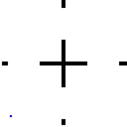
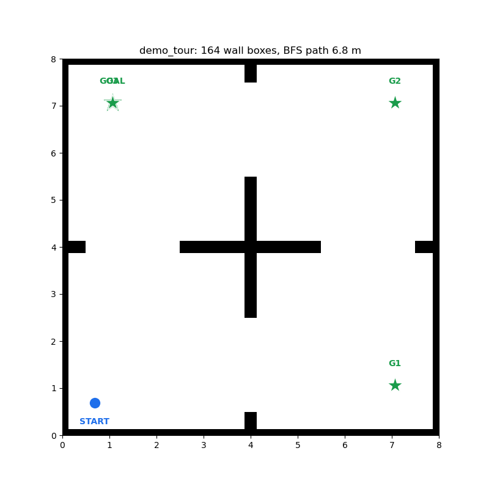
This paper reports contact with two instruments that measure different things, and we keep them separate everywhere because conflating them is how a safety claim becomes a slogan.
The two can disagree, and when they do it is informative rather than embarrassing: Sec. VII-A documents an episode whose certified hull box never penetrated (min +0.070 m, 0/2711 frames) while the >5 N latch fired, because the drive wheels and casters sit outside the certified box.
An honest caveat on the audit hull. The audit samples the 0.44×0.28 m hull with 13 points — the centre, the four edge midpoints, the four corners, and four quarter-points at (±0.22, ±0.07) — which leaves 0.22 m gaps along the long edges and 0.07 m along the short ones. It is therefore coarser than the 51-point hull the shield certifies against, and a reported audit clearance is an upper bound on the true hull clearance: a very shallow graze landing entirely between two audit samples would not be flagged. An earlier draft of this work described the audit hull as 17 points; the script has 13. Three things bound the residual risk: the shield's own certification uses the dense 51-point hull and was validated against a 361-point reference hull (Sec. IV-D4); the audit did catch every real contact we produced, down to −0.003 m; and the frame-exact numpy audit of Sec. VII-A is an independent implementation. Counts are reported both for the full recorded run and for the approach phase (up to first arrival within the 0.30 m success radius of the final goal), because the unshielded policy's post-success grind is a different behaviour from approach contact and pooling them would flatter neither.
Other metrics. Blocked-goal success (source world) is the fraction of episodes reaching within 0.30 m of a goal sampled with a wall guaranteed between spawn and goal, under deterministic mean-action inference, seed 42, 256 envs × 2405 steps (≈2.0–2.1k episodes per world). TTG is mean time-to-goal over successful episodes only. Shield interventions are ticks on which the published command differs from the policy command, reported as a percentage of env-steps and broken into escape-tier and retreat-tier firings wherever tier 3 (the uncertified tier) could have contributed. oob counts env-ticks spent outside the barrier's map-rectangle domain, an off-model audit that should be zero and is.
Traces, logs, maps, manifests, checkpoints and scripts behind every number are kept in the project workspace; figures are regenerated from those artifacts by draft/make_figures.py. Negative artifacts are kept alongside positives: the deadlocked shield traces (v2 spawn deadlock, v4 tour livelock, v7.4 absorbing freeze), the v6 penetration traces that forced the exact distance field, the corrupted-waypoint runs whose conclusions were invalidated, the wedge-failure traces, the blinded-ablation traces, and the num_envs=1 counterexample of Sec. VII-A. Where a result was superseded, the superseded numbers remain in the ledger rather than being edited out.
The subsections follow the two arms of the thesis. Sec. VI-A reports what the learned arm cost to obtain and what it could not do; Sec. VI-B/C follow the frozen policy across the geometry, dynamics and embodiment axes; Sec. VI-D/E follow the guarantee arm from a training-world concept check to a zero-contact deployment iteration; and Sec. VI-F/G/H put the two arms side by side — first in a consolidated transfer ledger, then in a 708-episode three-arm campaign, then on a held-out map drawn by a person. The last three are where the paper's central finding lives.
The training chronology is part of the result, and most of it is negative. PPO [13] from scratch never bootstrapped blocked-goal reaching: the best of the early runs reached 0.095 blocked success, and neither curriculum nor clearance shaping fixed it — exposure was not the binding constraint. Reward-space geodesic shaping made it worse, and observation-space waypoint injection alone produced a cautious in-place wiggle. Both of those conclusions were later found to be confounded by a corrupted waypoint observation: auditing 6232 sampled waypoints showed 40 % of the straight-line chords passed through walls and 30 % of the waypoints lay inside wall geometry. The bug invalidated five runs' conclusions (run12–14 and their shaping variants), and we report them as invalidated rather than re-interpreting them after the fact.
Behaviour cloning from a validated geodesic expert under the corrected observation reached 0.234; DAgger [10] relabelling gave 0.224 — no gap closing, which is a real finding and not a null one: distribution shift is provably not the binding constraint in this pipeline, so the standard remedy for imitation learning does not apply here. Adding the net-contact-force channel to the observation — the expert could see the force it was recovering from and the student could not, which is exactly where cloning stalled — gave the final 0.287 blocked success (run17, checkpoint bc_init_v3/model_0.pt), against a geodesic expert at 0.636 and a drive-straight floor of 0.036. The frozen policy is thus ≈8× the trivial floor and ≈45 % of its own expert. Two readings matter for the thesis: competence required a mathematical interface (the geodesic waypoint channel) to exist at all, and most of the compute spent bought falsified hypotheses rather than improvements.
With the weights frozen, the policy solves user-drawn maps it never saw: crossings in 33.5 s, ladder-easy in 29.3 s, ladder-mid in 26.2 s, and a three-goal tour in 46.1 s (Fig. 4). The mid rung — full-width partitions, a map class absent from training — is solved faster than easy (26.15 vs 29.30 s), because the partitions funnel approaches toward the gaps the policy already knows how to thread. Transfer is therefore not monotone in visual complexity but in behavioural overlap with the source distribution, and the ladder measures that overlap rather than difficulty. Two honest failures bracket the gradient: the hard rung does not finish, wedging 4.62 m short at the second gap corner (4.2, 3.85) after 25 recoveries, because the alternating backup recovery cannot change the approach angle enough; and a serial-rooms map with 1.0 m doors is 0/3. Four seeded repeats with spawn jitter (±0.15 m, ±15°) succeed 4/4 in 20.9–33.5 s, so the positive side of the gradient is not a lucky seed.
The blinding ablation isolates the carrier. Zeroing the geodesic-waypoint and geodesic-distance channels on a map where the same checkpoint succeeds 4/4 turns it into 0/1, with the robot pinning 5.74 m short against the first wall. The frozen LiDAR and contact reflexes do not compose into gap-threading on their own; the mathematically derived channel is load-bearing. This is the sharpest single piece of evidence for the division of labour: the learned weights carry the reflexes, the interface carries the task.
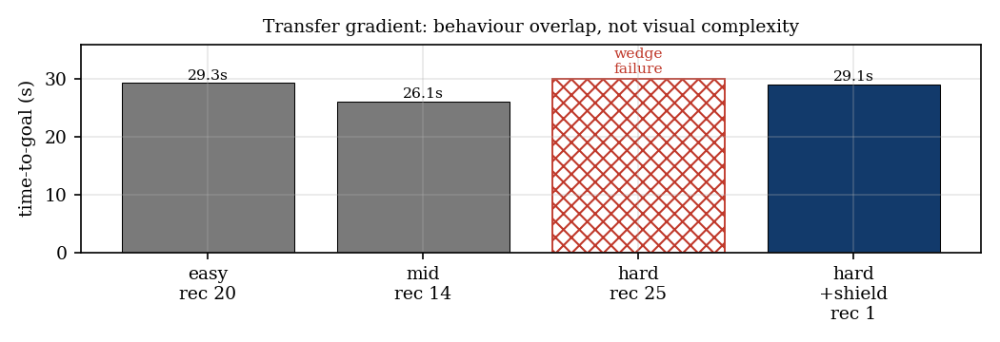
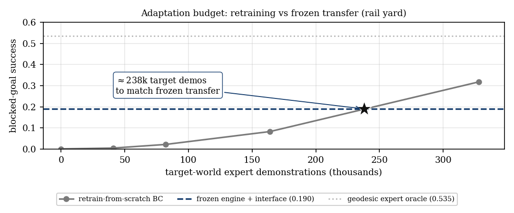
The adaptation-budget curve (Fig. 5) converts the transfer claim into an exchange rate: matching what the frozen engine delivers with no target data at all would cost on the order of 238 k expert demonstrations in the target world. It is the number we offer against “just retrain it”, with the caveats above printed next to it rather than in a footnote.
Under degraded actuator gain (thrust ×0.6), the frozen policy's blocked success collapses from 0.287 to 0.028 — a 90 % loss from a change the network was never told about. Adding DOB-lite, with no adaptation data and no weight change, restores 0.363, above the nominal frozen baseline, and the identified gain converges to g* = 0.599 against the true 0.6: the interface discovers the degradation factor from runtime data alone (Eq. (2)). An oracle arm told the factor in advance reaches 0.375, so the online observer lands within 3.2 % of an upper bound it never sees. On the source task, where the true answer is g=1, the observer converges to 0.964 and costs nothing (0.287 → 0.303) — it is not a booster. Under combined shift (degraded dynamics and unseen geometry) it repairs the dynamics half (0.044 → 0.250, g=0.602) while the geometry half still costs; one interface does not fix both axes, and none is claimed to (Fig. 6, Table II).
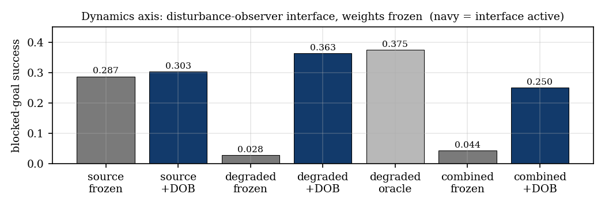
| deployment | blocked succ. | collision | mean g |
|---|---|---|---|
| source, frozen | 0.287 | 0.642 | — |
| source, +DOB-lite | 0.303 | 0.644 | 0.964 |
| degraded (×0.6), frozen | 0.028 | 0.472 | — |
| degraded, +DOB-lite | 0.363 | 0.617 | 0.599 |
| degraded, oracle boost | 0.375 | 0.629 | — |
| combined (degraded + unseen geometry), frozen | 0.044 | 0.719 | — |
| combined, +DOB-lite | 0.250 | 0.798 | 0.602 |
The Koopman concept check mirrors this on the model side (Fig. 7). A frozen source-world lifted fit keeps the body-twist channels usable on degraded data (R² 0.811 on vx, 0.758 on wz) but loses the wheel channels — 0.88 / 0.88 on source-world validation falling to 0.565 / 0.567, i.e. exactly where the degradation acts — and drops below the persistence baseline (0.790 / 0.773) there, which is the honest way to say the frozen lift fails on those channels. A small refit of the lift statistics on degraded data alone recovers 0.896 / 0.884 / 0.992 / 0.989. Two negatives accompany this and are not decorative: the quadratic lift barely beats a plain affine fit at this scale, and the lift is never closed around the plant anywhere in this paper. What transfers is the freeze-structure/adapt-interface pattern, not the lifting mechanism.
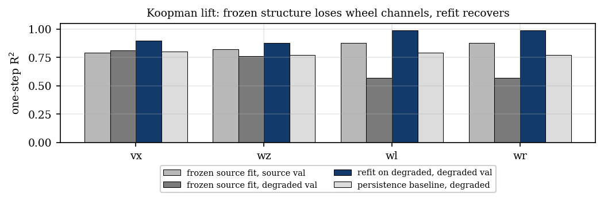
The shield of Sec. IV-D was not the first safety interface we built, and the distance between them is measured rather than rhetorical. The concept check (openmover_lab/cbf_lite.py, runner flag --cbf_lite) instantiates Eq. (3) in its smallest useful form: a single directional cone clamps the forward command to the stoppable speed vsafe(d) = sqrt(2 adec max(d − dmargin, 0)), where d is the LiDAR clearance inside ±45° of the actual travel direction (front scan for v ≥ 0, rear scan for v < 0), dmargin = 0.30 m is measured at the sensor origin, and adec = 1.0 m/s². The spin component is never touched, so the policy can always re-aim; the filter sits after DOB-lite when both are enabled, i.e. the safety arm keeps final authority; and the weights are the same frozen bc_init_v3/model_0.pt. Protocol: 4 environments (the env guard forbids more envs than terrain tiles), 2405 steps, --fixed_block_prob 1.0, seeds 42/1/7 — 22–24 episodes per arm on the ring map, 4 on slalom.
Where it helps. On the ring map the cone cuts collisions by 23 % (three-seed mean 0.799 → 0.613) while blocked-goal success slightly improves (0.331 → 0.358). Per seed: success 0.227 → 0.348, 0.348 → 0.318, 0.417 → 0.409 against collision 0.864 → 0.565, 0.783 → 0.591, 0.750 → 0.682 (Fig. 8). Slower approaches near walls remove bounce-offs that used to end episodes, and the untouched spin component preserves the policy's ability to re-aim. In the source world, on the 256 envs × 2405-step protocol, the filter is nearly free: blocked success 0.287 → 0.274 (within per-seed noise), collision 0.642 → 0.571 (−11 %), TTG 10.95 → 11.02 s. A safety interface that taxes nominal operation is not deployable; this one does not. Intervention rate scales with deployment stress — 46.3–51.4 % of steps (4450–4945 of 9620) on the out-of-distribution ring versus 14.6 % (89,930 of 615,680) in distribution: the filter works hardest exactly where transfer is weakest, the same pattern the shield shows at campaign scale (Sec. VI-G).
Where it does nothing — the most useful number in this subsection. On the slalom map, whose failures are side and oblique contacts while threading narrow gaps, the cone is a no-op: 0.2 % interventions (17 of 9620 on seed 7, zero on seeds 42 and 1), identical 0.000 success and identical collision (1.000 / 1.000 / 0.500 on both arms). A barrier that sees only the travel direction cannot see a wall the robot is drifted sideways into. An earlier version of the same idea was worse than a no-op and is worth recording: v0 took the minimum range over the whole ±90° hemisphere (dmargin = 0.15 m, adec = 1.5 m/s²) and never fired once — 0 of 9620 interventions — because a hemisphere minimum is dominated by corridor side walls at ≈0.4 m grazing incidence: it tracked the walls the robot drives past, never the wall it drives at. An apparent improvement from v0 turned out to be a floating-point round-trip artifact ((v·x)/x ≠ v perturbing chaotic trajectories); returning the action untouched when no clamp fires made the no-op path bit-exact, which is what exposed that v0 never clamps at all. We kept that discipline: an interface's do-nothing path must reproduce the unprotected run exactly, so that every measured difference is attributable to an actual intervention (tier 1's pass-through in Sec. IV-D publishes the policy twist itself, not an approximation of it). The slalom negative is the direct motivation for the hull-aware, persistence-backed shield: the cone demonstrates the mechanism (sensor → barrier → projection over a frozen policy), but a deployable safety layer needs a footprint model, not a cone.
Caveats, printed next to the numbers: the custom-map arms are small (4 envs ⇒ 22–24 episodes on ring, 4 on slalom), so per-map values are seed-means and ring seed 42 is the cleanest single comparison; clearance is sampled by a 15 Hz LiDAR under 20 Hz control, i.e. one env-step stale, and the 0.30 m margin carries the hull extent and that staleness jointly rather than separately; and the filter assumes the nominal speed scale vfull = R·Wnom, so on degraded dynamics it must be paired with DOB-lite, which restores that scale (Sec. VI-C).
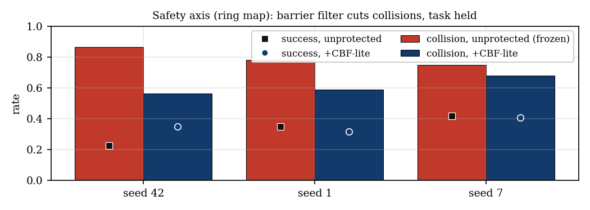
The five presentation maps are hand-picked and we say so: they are the demonstration set, and the systematic evidence is Secs. VI-G and VI-H. Their value here is different. They are the only runs deployed through the complete ROS 2 node stack on the second embodiment, and they were run twice with the same frozen checkpoint, the same maps and the same launch procedure, the shield enabled by one parameter. That pairing isolates the guarantee arm's contribution on identical competence.
Iteration 1 (competence arm alone). All five runs reached their goals, and the exact-box audit found contact in four of them (Table III, Fig. 9). The contact decomposes into three classes with different meanings. (i) Approach grazes: open 6 frames at ≤1.4 cm depth, mid 1, crossings 1 — shallow, brief, and precisely the frames a coarse instrument can miss. (ii) A sustained wedge on the hard rung: gauntlet 917 frames, goal never reached, the policy pinned into the gap corner. (iii) Post-success grinding against the goal pocket, which is the bulk of every full-run count (tour 71 frames, all after the final arrival; open 453 of its 459; crossings 411 of its 412), a direct consequence of a frozen policy that has no stop-at-goal behaviour. These contacts are the expected behaviour of a policy trained with contact as a recoverable one-shot penalty and deployed without a guarantee arm. Iteration 1 is the measurement of the framework's predicted gap, not a regression — and it is why every audit in this paper is split into approach and full-run columns.
Iteration 2 (guarantee arm on). Same checkpoint, same maps, same launch procedure. All five reach their goals with zero hull-penetration frames over the full recorded run (0 of 1950 frames on each), minimum hull clearance +0.131 to +0.287 m (Fig. 10); Fig. 11 plots the five executed paths on their wall sets. Recoveries drop an order of magnitude (open 20 → 1, mid 14 → 1): the shield removes stall and blip cascades at the source instead of letting the recovery layer clean up after them. The hard rung flips from failure-with-contact to success-without-contact (29.10 s, one recovery): removing the contact cascade lets the policy's own competent steering accumulate progress. Shield activity is sparse where the policy is competent — 38 to 86 intervention ticks out of 2400 — and exactly zero on one of the two tour runs (Fig. 12), meaning that on that run every command the policy issued was already certified safe and the filter published it unmodified.
| map | iter. | verdict | time | recov. | shield ticks | approach pen. | full pen. | min clr. |
|---|---|---|---|---|---|---|---|---|
| open | 1 | SUCCESS | 29.3 s | 20 | — | 6 | 459 | −0.014 m |
| open | 2 | SUCCESS | 26.2 s | 1 | 67/2400 | 0 | 0 | +0.182 m |
| mid | 1 | SUCCESS | 26.2 s | 14 | — | 1 | 352 | −0.005 m |
| mid | 2 | SUCCESS | 25.0 s | 1 | 47/2400 | 0 | 0 | +0.179 m |
| crossings | 1 | SUCCESS | 33.5 s | 2 | — | 1 | 412 | −0.003 m |
| crossings | 2 | SUCCESS | 24.6 s | 1 | 38/2400 | 0 | 0 | +0.287 m |
| gauntlet | 1 | FAIL (wedge) | — | 25 | — | 917 | 917 | −0.062 m |
| gauntlet | 2 | SUCCESS | 29.1 s | 1 | 86/2400 | 0 | 0 | +0.158 m |
| tour | 1 | SUCCESS 3/3 | 46.1 s | 3 | — | 0 | 71 | +0.331 m |
| tour | 2a | SUCCESS 3/3 | 49.9 s | 0 | 0/2400 | 0 | 0 | +0.237 m |
| tour | 2b | SUCCESS 3/3 | 57.2 s | 0 | 45/2400 (20 esc.) | 0 | 0 | +0.131 m |
Which shield produced which number. This paper reports results from two generations of the same mathematical filter and labels them everywhere rather than quietly pooling them. The presentation runs of Table III were produced by the ROS 2-era shield (v4 on the four single-goal maps, v5 on the tour runs; Stack B of Table I): two tiers, a 17-point hull, an obstacle model built only from persisted LiDAR hits, and a stop command treated as axiomatically admissible. The campaign (Sec. VI-G) and the held-out endgame (Sec. VI-H) were produced by v7.5: three tiers, a 51-point hull, the exact-box ESDF (Stack A) or its union with the persisted raster (Stack B), stop certified by evaluation rather than by axiom, and the never-publish-stop-while-a-certified-mover-exists rule. The reason both appear is that the second generation exists because we stress-tested the first: the same 17-point/raster instrument, run on the tighter 10 m procedural pool, penetrated twice — −0.0405 m and −0.0564 m (Sec. IV-D1) — a hull corner reaching between sample points into a 0.12 m-thick box that the 0.08 m raster had quantised away. The presentation set's zero contact is therefore a true measurement of a weaker instrument on geometry that did not stress it, and we do not extend that claim beyond the maps measured. Every guarantee statement in this paper is relative to the obstacle model and the hull model of the version that produced it. We think the sequence is worth more to a reader than a single polished version number: scaling a safety shield from a five-map proof of concept to a 708-episode campaign cost, in order, a sector veto that protected the sensor instead of the hull, a spawn deadlock, a post-success grind, a corner-pocket livelock, two hull penetrations, and an absorbing freeze — each one measured, root-caused, fixed and kept.
The chronology behind those versions (every artifact kept). v1 (sector veto): twelve angular sectors, per-sector minimum range, unsafe sectors vetoed. The robot reached the goal and the audit still flagged penetrations — sector minima protect the sensor origin, not a hull with corners. v2 (hull-aware, margin 0.22 m, no persistence): deadlocked at spawn; every candidate including in-place rotation was judged unsafe, so it published (0, 0) forever — 0.08 m of total motion, 2400/2400 shield ticks. Diagnosis: the spawn corner's true hull clearance was +0.31 m, less than margin plus dilation, and the measured LiDAR bias was ±0.062 m = cell quantisation, not calibration error. Two lessons — size the margin against the real clearance distribution, and in a static world remember obstacles instead of re-sensing them. v3 (margin 0.10 m, reverse candidates, per-beam world-frame persistence): reached the goal on demo_open with 206 flagged frames, all after success — the frozen policy ground the goal pocket for the remaining 97 s (approach phase: 0 penetrations, +0.17 m). The fix was behavioural, park-after-success, not a relaxation of the barrier: final audit 0 penetration frames, exact and raster. v4 (presentation set): cleared four maps, livelocked on the fifth. v5 (two-tier): tier 2 engages only when tier 1 is rotation-locked, and re-checks candidates against the raw wall grid (cells containing actually-sensed wall points) at |v| ≤ 0.20 m/s, where raw-grid safety — the hull never entering a sensed-wall cell — is the hard no-touch bar, so zero contact remains guaranteed by construction. On maps that never rotation-lock the escape tier is provably inert, and it was verified offline in both directions: a fresh buffer passes tier 1 with no intervention, and a worst-case union buffer makes the robot stop safely rather than move unsafely.
The livelock and its fix. The first shielded tour run (v4) livelocked at tour goal 3: in the tight corner pocket, grazing hits plus dilation left no forward candidate admissible in tier 1, and the robot rotated in place 9 mm short of the success radius, indefinitely. Exact geometry showed the pocket was open — nearest walls 0.455/0.465 m, closest approach 0.309 m against a 0.30 m success radius. The mechanism was sensor noise, not geometry: grazing LiDAR hits scatter 3–20 cm off true wall surfaces, and the disk dilation (K = ceil(0.10/0.08) = 2 cells ≈ 0.16 m) pushed the comfort envelope past the ≈0.18 m clearance the hull actually keeps. Tier 2 resolves it without weakening the guarantee, and the two independent v5 tour runs show both paths through the same pocket: one threaded it with zero shield interventions (49.9 s, minimum clearance +0.237 m), the other rotation-locked and crept out through the escape tier (20 escape ticks of 45 total, 57.2 s, minimum +0.131 m). Both are 3/3 goals with zero contact. Run-to-run ROS/sim timing selects the path; the guaranteed quantity — the contact outcome — held in both. That is the honest scope of the claim: the guarantee is on the contact outcome, not on the trajectory, and we report the run-to-run spread rather than the favourable member. The livelock trace is kept as an artifact.
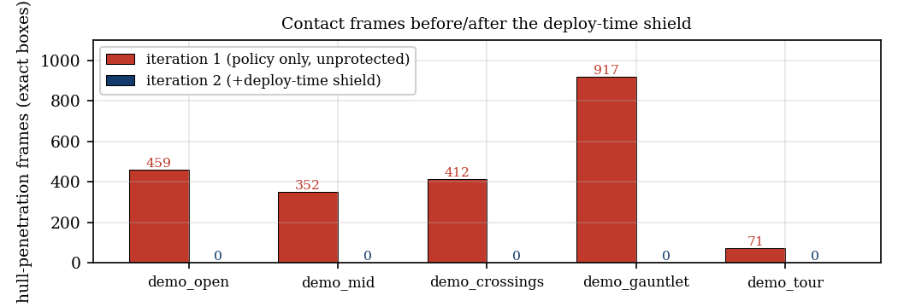
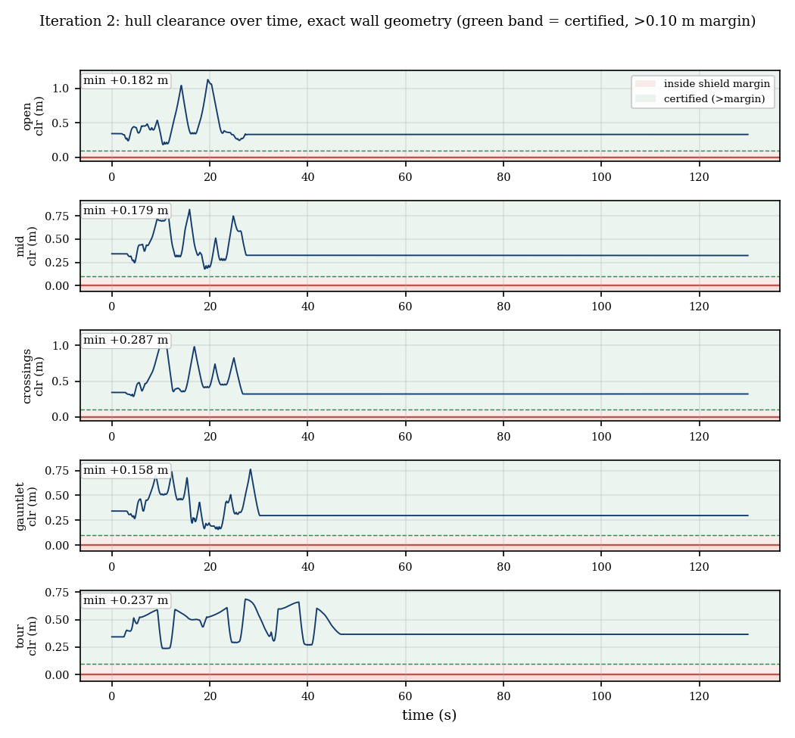
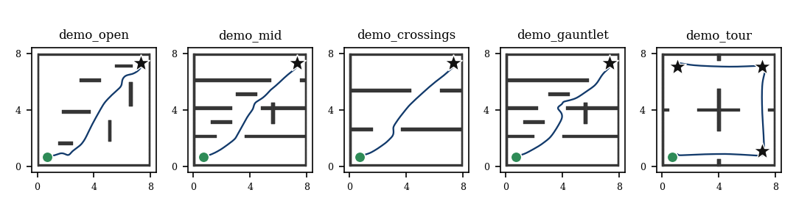
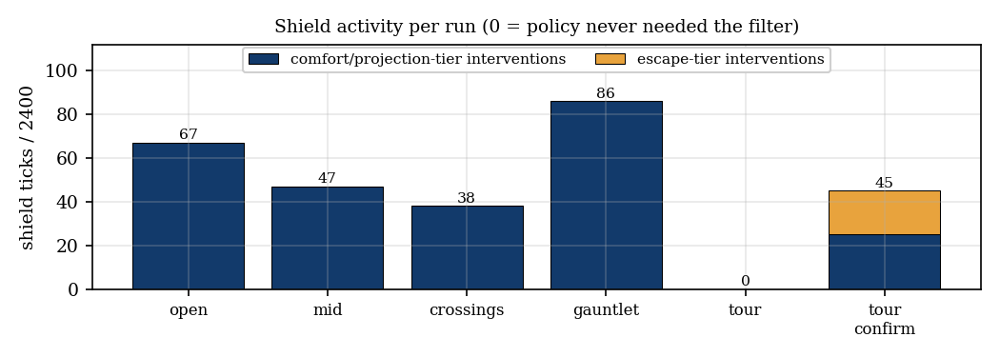
Task structure transfers through the interface. The ordered three-goal tour is solved by the frozen policy with per-leg field rebuilds: the node reads an ordered goals list from the same map JSON, advances on arrival (< 0.30 m) and rebuilds the geodesic field per leg — 46.05 s for all three legs in iteration 1 (leg arrivals at 14.40 / 29.00 / 46.05 s, 3 recoveries), 49.9 and 57.2 s shielded. Sequencing is an interface arm, so one learned behaviour set composes into many task instantiations with zero weight changes. Its negative counterpart is informative: on demo_serial (true 2 × 2 rooms, 1.0 m doors) the same frozen policy stalls at the leg-1 door, 0/3 goals, 3.97 m short, 20 recoveries — the identical corner-wedge seam that fails the ladder's hard rung (Sec. VI-B) on an independent map family. The boundary is a property of the transferred behaviour set, not of one map.
Deployment transfers through the message boundary. The same node stack drives a pioneer3dx plant — wheel radius 0.09 m against the trained 0.050353 m, track 0.32 m against 0.324 m, different mass, casters and a velocity servo (KD = 20) — through the identical geometry_msgs/Twist on /cmd_vel. Nothing above that boundary knows which robot is below it: linear speed is preserved exactly by the chain and angular speed within 1.25 % (the ≈1.2 % track mismatch is absorbed by the servo). What changes at deploy time is small and enumerable — the kinematic constants in the action → twist conversion, the footprint inflation used to build the field (0.20 m in Lab, 0.35 m for the larger hull), and the stall-proxy calibration; what does not change is the 1208-dimensional observation contract, the weights, the field construction and the recovery triggers. Evidence on the mismatched plant: the headline run drives spawn (0, 0) → goal (−7, 4), an 8.07 m reach, in 30.85 s with zero retraining. The honest companion on the same plant: the detour-conflict goal (6, 8) was NOT REACHED, with 8 recoveries. This is deploy-time embodiment transfer under a velocity-level interface; it is not cross-embodiment learning, and it is not the latent-alignment mechanism proposed in the framework draft, which remains unexercised anywhere in this paper and is queued as future work (Sec. VIII). Table IV consolidates every transfer axis examined above under a single frozen checkpoint.
| axis | mechanism | result |
|---|---|---|
| geometry (zero-shot) | none | rail yard 0.190 blocked succ. (−34 % vs source 0.287) |
| geometry + task | GeoField from the shared map JSON | user maps zero-shot; ladder easy/mid 29.30/26.15 s; 3-goal tour composed in 46.05 s |
| robustness | spawn jitter ±0.15 m / ±15° | 4/4 success, 20.9–33.5 s |
| interface necessity | waypoint-blinding ablation | 4/4 → 0/1, pins 5.74 m short |
| dynamics | DOB-lite observer | degraded 0.028 → 0.363; within 3.2 % of an oracle told the factor |
| dynamics model | frozen Koopman lift + refit | wheel channels 0.88 → 0.57 → 0.99 (refit); lift barely beats affine |
| safety (training world) | cone barrier (CBF-lite) | ring collisions −23 %, success 0.331 → 0.358; slalom no-op |
| safety (ROS 2 deployment) | two-tier shield, v4/v5 (Stack B) | 0 contact frames on 5 maps + 2 tour runs, exact-box audit |
| adaptation budget | retrain-from-scratch curve | zero-shot ≡ ≈238 k target-world demos |
| embodiment | velocity-level interface | pioneer3dx plant, 8.07 m reach, 30.85 s, zero retraining |
| safety at scale | three-tier shield v7.5 (Sec. VI-G) | 56 maps × 3 arms, 708 episodes: thesis arm 0.979 succ., 0.000 collision |
| held-out geometry | same shield, no map-specific tuning | user-drawn maze: thesis 1.000/0.000 vs unprotected 1.000/0.900; trained 0.000/0.000 |
The presentation runs are hand-picked; the campaign is not. We generated 56 maps from 7 procedural families (corridor, gates, loop, fortress, competition, warehouse, highway) × 4 difficulty bins × 2 variants, and ran every map under three arms at a fixed seed with 4 spawn-yaw repeats (10 on the two locked presentation maps): the frozen trained policy under the shield, our in-house A*+DWA planner unprotected, and the same planner wrapped in the shield — the thesis arm, where a competent but uncertified controller receives its guarantees from the interface alone. 236 episodes per arm, 708 total, shield v7.5 (Stack A) on every shielded run, 4.5 h aggregate wall clock, 0 timeouts, 0 non-zero return codes, 0 incomplete episode captures.
| arm | success | collision | TTG (s) | shield interventions |
|---|---|---|---|---|
| trained + shield | 0.644 | 0.004 (1/236) | 47.5 | 46.6 % of ticks |
| A*+DWA (unprotected) | 0.941 | 0.534 | 52.7 | — |
| A*+DWA + shield (thesis arm) | 0.979 | 0.000 (0/236) | 54.8 | 14.5 % (65,457: escape 12,684, retreat 5,327, pin 142) |
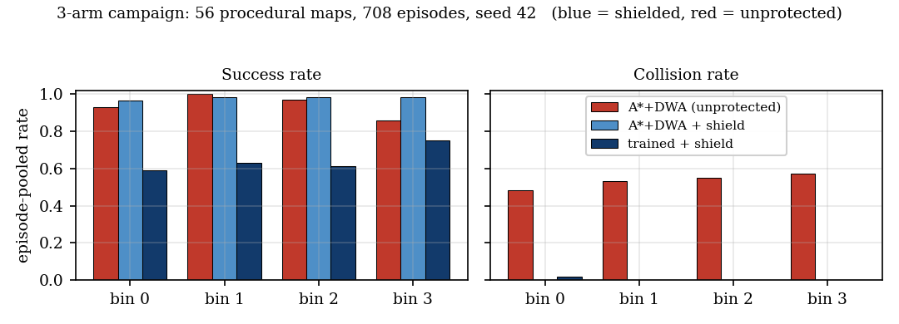
Three results matter. (i) The guarantee held at scale. The thesis arm scored zero collisions on all 56 maps — 0 of 236 episodes — and the off-model audit (shield_oob, ticks where the robot left the barrier's map-rectangle domain) counted zero over 452,404 env-steps for each shielded arm. The unprotected planner contacted walls in 53.4 % of episodes, concentrated where geometry is tightest (fortress 0.95, warehouse 0.74, corridor 0.72) and nearly absent on the wide highway family (0.03): the failure class is corner-cutting in narrow space, exactly what a hull-aware barrier certifies against. Its own diagnostics confirm the mechanism — 23,062 plans, 22,826 replans, 0 stuck episodes, and dwa_reject = 0 over the whole campaign: DWA's 0.03 m point-model margin never once rejected a candidate, so nothing in the planner itself opposed those contacts. (ii) The shield is cheap and difficulty-flat. It costs +2.1 s TTG (+4 %), intervenes on 14.5 % of ticks, and its collision rate does not move across difficulty bins (Fig. 13). It also adds competence: success rises 0.941 → 0.979 because stall and livelock episodes become escape-tier recoveries rather than timeouts. (iii) An honest negative on the learned arm. The trained policy's competence is family-structured: 0.94 on competition and highway, 0.84 on loop and warehouse, 0.61 on fortress, 0.31 on gates, 0.000 on corridors (31 of 32 corridor episodes timed out, plus the one scrape). 83 of its 84 failures are timeouts, not contacts: the shield holds safety exactly where the policy fails the task. That single shielded contact in 708 episodes is the marginal 5.6 N tier-3 scrape on f1_b0_m01 (trained arm, env 2, against a 5 N threshold), root-caused to the uncertified retreat tier (Sec. IV-D3) — we report it as the campaign's one breach rather than rounding it away, and the tier that produced it is the only uncertified line of code in the shield.
Two further numbers deserve printing because they are the kind a reader cannot recover from a mean. On the two locked presentation maps, run with 10 spawn-yaw seeds each, the thesis arm scores 1.000 success / 0.000 collision at 65.5 s (f4_b1_m00) and 1.000 / 0.000 at 58.7 s (f6_b2_m00), against 1.000 / 1.000 unprotected at 59.1 and 54.5 s: on the maps we use for demonstrations, the unprotected planner collides in every single episode and the same planner under the shield collides in none. The trained arm on those two maps is 0.600 / 0.000 and 1.000 / 0.000 — safety again where competence is uneven.
Two stops, both documented. The campaign as tabled is the third launch. The first (two arms, 112 runs planned) was stopped after 8 runs when the shield arm returned 0/4 on three consecutive corridor maps while the unprotected planner solved all of them: rather than burn four hours on a measurement we could not interpret, we diagnosed it. A bare-policy trace presses into a wall for the final 76 s of the horizon (0.16 m of creep); a shielded trace is correctly rerouted around that wall by the shield and then wanders off-route and freezes spinning in an open pocket from t = 77.5 s to timeout while the waypoint observation still points back along the connected route. That is an out-of-distribution state for a policy trained on open terrains — it has no behaviour for “the waypoint says go back the way you came” — and every shielded run in that batch recorded zero collisions: the guarantee held, the competence failed. The third arm exists because of that stop. The second launch was stopped after 3 runs when f1_b0_m01 logged 1952 out-of-domain ticks on the thesis arm; cell-by-cell inspection exonerated the map (its east border is two full-height segments forming a sealed T-junction) and the cause was a PhysX spawn pop, fixed with a 5 mm spawn lift. The same window produced two reproducibility fixes we kept: the generator's per-cell boxes were merged 13,395 → 768 (−94 %) with a cell-for-cell geometry-preservation proof, and a family that was silently non-reproducible across processes (set-iteration order over strings, i.e. PYTHONHASHSEED) was made deterministic, verified by identical geometry hashes. Pre-fix contaminated results remain archived rather than deleted.
One counterexample qualifies the guarantee and is treated in Sec. VII-C: a single-environment video replay of f6_b2_m00 under the thesis arm does record a collision, while the 10-environment protocol above records 0.000 on the same map. Both are correct measurements of different protocols, and the frame-exact audit of that replay shows the certified hull never penetrating (minimum +0.070 m over 2711 frames) — the contact is drive hardware outside the hull box.
The campaign's 56 maps are produced by our own procedural families; a sharper test of “the guarantee comes from the interface” is a map nobody engineered. A user drew an arbitrary serpentine maze on a blank 800 × 800 canvas — no straight shot from start to goal — and we ran it with no retraining, no map-specific tuning and the identical locked protocol: 10 spawn-yaw seeds folded into num_envs, seed 42, horizon min(34.38/0.25 + 10, 190) = 147.52 s, 2971 steps, field iterations auto-raised to 177 for convergence on the long path. The drawing rasterises to a 15.0 × 15.0 m world (0.125 m cells, 884 wall boxes, 0.5 m wall height), spawn [7.812, 2.312], goal [7.812, 11.938], geodesic path 34.38 m, narrowest corridor ≈1.11 m with clearance ≥0.50 m along the whole path (Fig. 14). It appears in neither the training distribution nor the campaign.
We report the one judgment call this map required. At the native 8 m tile the narrowest corridor was ≈0.75 m, whose clearance-restricted bottleneck is ≈0.37 m: the 0.33 m hull half-diagonal barely fits, but the inflated A* planner (which needs ≈0.53 m) cannot plan through it, so the run would have measured the planner's inflation parameter rather than the framework. The naive metric we first used — minimum clearance along the BFS shortest path, 0.125 m — was misleading, because that path hugs walls; the correct instrument is a clearance-restricted BFS over {free ∧ D ≥ MINC} with D the Euclidean distance transform. Rescaling the physical tile size to 15 m changes corridor metres without changing the cell count or the drawing, and at MINC = 0.50 m the map is navigable everywhere. The 884 boxes merge into a 113,248-vertex / 509,304-face terrain mesh in 3.2 s; because the barrier's field queries are O(1) on a precomputed 0.025 m lattice, per-step shield cost is unchanged from the 10-box campaign maps. All three arms ran sequentially, one simulator at a time, in ≈10 minutes total (165 / 202 / 224 s), with no crash and no out-of-memory event.
| arm | success | collision | TTG (s) | oob | shield ticks | planner |
|---|---|---|---|---|---|---|
| trained + shield | 0.000 (0/10, all timeout) | 0.000 (0/10) | — | 0 | 22,549 = 75.9 % | — |
| A*+DWA (unprotected) | 1.000 (10/10) | 0.900 (9/10) | 103.3 | — | — | plan 1500, replan 1490, dwa_reject 0, stuck 0 |
| A*+DWA + shield (thesis arm) | 1.000 (10/10) | 0.000 (0/10) | 105.7 | 0 | 5,711 = 19.2 % | bit-identical to the unprotected twin |
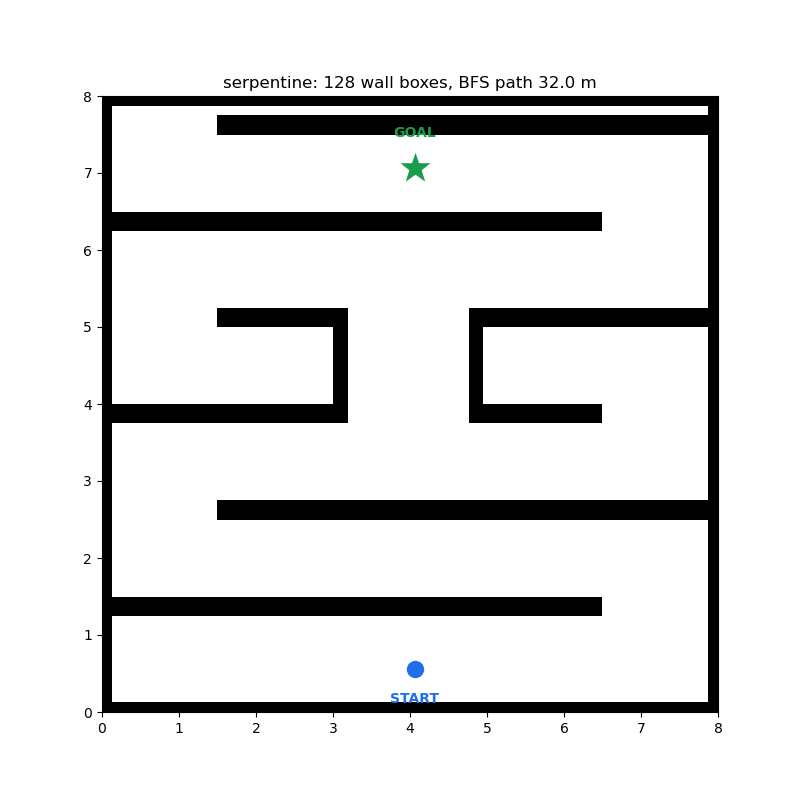
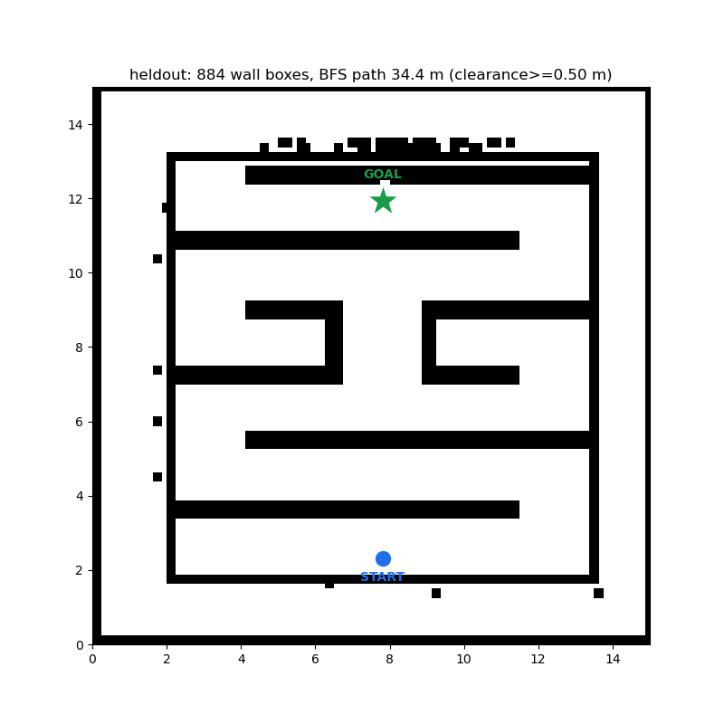
The three arms separate cleanly on this single unseen map, exactly along the framework's axis. (i) The learned policy does not transfer to this geometry, and the shield cannot manufacture competence. The frozen checkpoint reaches the goal in 0/10 episodes — every seed runs out the 147.52 s horizon (per-env time-to-goal 147.5 s, reached = false throughout). This is competence failure, not truncation: both planner arms finish in ≈104 s with ≈30 % of the budget to spare, while the trained arm consumes all of it and arrives nowhere — the corridor/gates gap of Sec. VI-G reproduced on a map no procedure generated. The shield works far harder here than in distribution (75.9 % of ticks versus 46.6 % in Table V; escape 1546, retreat 1335, pin 252, and no livelock) yet still holds safety exactly where the policy fails: 0/10 collisions, zero out-of-domain ticks. (ii) The classical planner transfers but is not safe by itself. A*+DWA plans on the occupancy grid of any map, so its competence is map-agnostic: 10/10 success. Unprotected it contacts walls in 9 of 10 episodes (only env 1 is clean), and its own DWA margin never once rejected a candidate (dwa_reject = 0 with a 0.03 m margin): the point model deemed every command safe while the hull and the drive hardware clipped the ≈1.11 m corridor walls. (iii) Wrapped in the shield, it is competent and guaranteed. The thesis arm runs the identical planner (plan 1500, replan 1490, dwa_reject 0, stuck 0 — bit-identical to its unprotected twin) and converts 9/10 collisions into 0/10, zero out-of-domain ticks, for +2.4 s (+2.3 %) TTG; the exact-box barrier intervenes on only 19.2 % of ticks, because the planner already drives mostly safely and the filter's job reduces to vetoing the corner-cuts DWA's margin waves through. This extends the thesis arm's campaign guarantee from 0/236 to 0/246 episodes with no map-specific adjustment: on a map drawn by a person and never seen in training, the guarantee still comes from the interface, not from the policy.
The two instruments on this map. Auditing the clipped episode-0 traces under exact box geometry gives minimum hull clearance +0.1546 m with 0 of 2082 penetration frames for the thesis arm, +0.0703 m with 0 of 2135 for the unprotected planner, and +0.1194 m with 0 of 2950 for the trained arm. So the geometric instrument finds no hull penetration on this map under any arm, while the physical instrument records 9 collisions for the unprotected planner. Both are correct, and the gap between them is the substance of Sec. VII-B: the contact is drive wheels and casters, hardware that sits outside the certified 0.44 × 0.28 m hull box. It also bounds our own claim honestly — the shield certifies a hull model, and on this map the unprotected arm's collisions were never hull penetrations, so the thesis arm's 0/10 is a statement about contact forces, not a strictly stronger geometric margin than its twin's. Fig. 15 renders this single episode — the paper's endgame — frame by frame, one column per arm: what each arm drove (top) and how close the certified hull came to the walls while it did so (bottom).
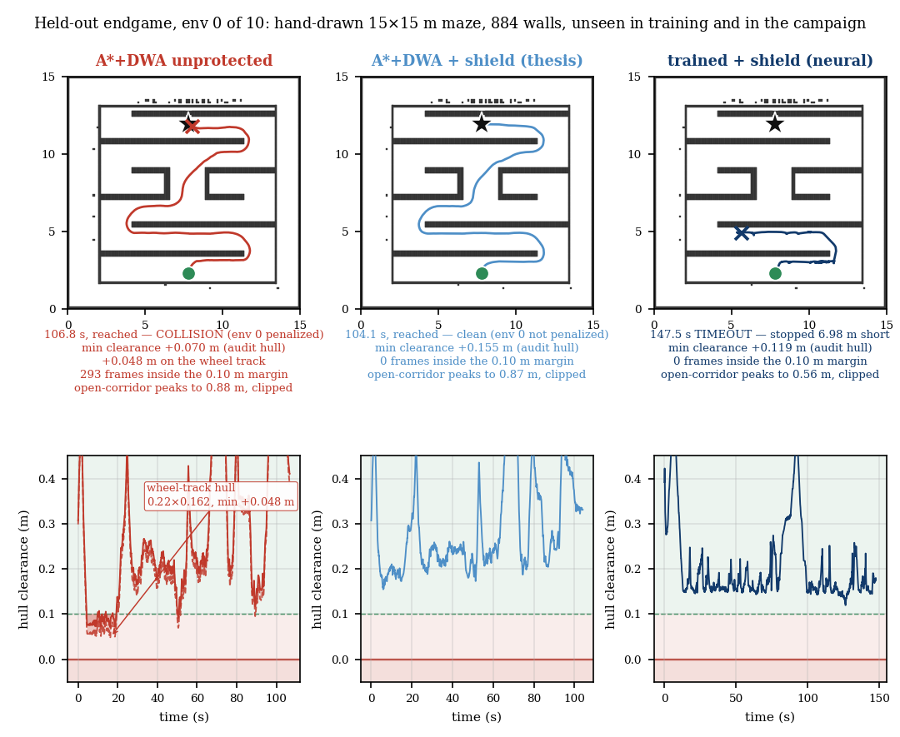
Taken together the results support one sentence: a learned policy provides competence that can cross worlds, tasks, dynamics and embodiments with frozen weights, and a mathematical interface provides the guarantees and task grounding that the learned component cannot — and the two are separable enough that each can be measured, and replaced, independently. Each clause is measured: transfer by the ladder, the seed repeats and the budget curve; the competence-carrier by the waypoint-blinding ablation (4/4 → 0/1, pinned 5.74 m short); guarantees by the exact-box audit and the >5 N contact latch across 708 campaign episodes and 10 held-out episodes; and the boundary between the two arms by the shield's inability to aim at anything and the policy's inability to stay contact-free alone.
The separability clause is the one that produced our headline, and it cuts against the framing we started with. Because the guarantee arm is arm-agnostic, we could wrap a competent classical planner in the same shield and measure both arms side by side. On the campaign's 56 maps and on the held-out drawing, the shield-wrapped planner is the only arm that is both competent and contact-free (0.979 / 0.000 and 1.000 / 0.000); its unprotected twin is competent and unsafe (0.941 / 0.534 and 1.000 / 0.900); the learned policy is the only arm that crosses dynamics and embodiment with frozen weights, and on geometry far outside its training distribution its competence runs out (0.000 on corridors, 0.000 on the held-out map) while its guarantee does not (0/236 and 0/10 contacts). We report this as the benchmark's central finding rather than as an embarrassment: guarantees transferred perfectly and arm-agnostically; competence transferred along some axes and not others. A paper that claimed the learned policy wins on every axis would be claiming something our own data contradicts.
Against the objection that classical planners already solve contact-free navigation on known maps, the campaign answers with a measurement: they do not, not by themselves. Our own competent A*+DWA planner contacts walls in 53.4 % of its 236 campaign episodes and 9 of 10 held-out episodes, with its internal 0.03 m margin rejecting nothing in either set. Wrapped in the shield it is contact-free in all of them and more successful (0.979 versus 0.941), because stalls become escape-tier recoveries instead of timeouts. And the shield is a classical DWA-family layer — deliberately: the claim was never that a network dodges walls better than DWA. What a hand-written planner does not do is transfer. Retarget it to a new world, degraded dynamics or a new embodiment and it is rewritten and retuned; the single frozen checkpoint crossed all four axes through interfaces, and the same shield wrapped both controllers without a line of arm-specific code. Conversely the shield carries no task objective: with no policy and no planner there is nothing to certify and nothing to aim at. Neither arm alone does the job. The composition does, and the composition — not either component — is what we offer.
What the results do not prove: that a learned policy is the best competence source for this task (on our own benchmark a planner beats it); that anything here transfers to hardware (every number is simulation, with a ROS 2 boundary and a second simulated embodiment as the closest proxies); that the no-contact property is unconditional (it is relative to four models, enumerated next); or that the guarantee arm improves competence in general (it improved the planner's success by 3.8 points and could not move the trained arm's corridor failures at all).
Transfer learning already shows that learning transfers when target data is available; this work is an answer for the regime where it is not, or where spending it is unsafe or expensive. Its service to the broader goal is fourfold. It prices transfer: the adaptation-budget crossing states what frozen transfer saves in target-world demonstrations (≈238 k, with the single-seed and one-map caveats printed beside it). It localises transfer: the ablations and the ladder say which interface carries which axis, and place the boundary in behavioural rather than visual terms — the mid rung is solved faster than the easy rung because it overlaps the source behaviour set more, not less. It certifies transfer: the guarantee arm converts “the policy usually behaves” into “no command reaches the chassis unless a forward simulation of the full hull cleared it”, at a measured 3.6 ms on CPU, with the residual risk enumerated rather than footnoted. And it bounds transfer: the held-out map is a measurement of exactly where learning stops paying and mathematical structure takes over — competence 0/10, guarantee 0/10 contacts, same checkpoint, same shield. None of this replaces transfer learning. It delineates the part of the cross-world burden that mathematical structure can carry while the weights stand still, and it says which part it cannot.
We presented a benchmark study of the transfer-first paradigm: one frozen differential-drive policy, trained once, redeployed across unseen geometry, task structure, degraded dynamics and a second embodiment through adaptable mathematical interfaces, and wrapped at deployment in a three-tier safety shield whose no-contact property is structural, cost-measured (0.31 ms pass-through, 3.6 ms for a full 56-candidate batch on CPU against a 50 ms budget at 20 Hz) and audited frame-by-frame against exact wall geometry. The positives — a zero-shot gradient on user-drawn maps, 4/4 under spawn jitter, dynamics recovery 0.028 → 0.363 within 3.2 % of an oracle, zero contact frames on the five presentation maps, and at campaign scale a shield-wrapped planner at 0.979 success with 0/236 collisions where its unprotected twin collides in 53.4 %, carrying to a held-out user-drawn map at 10/10 success and 0/10 collisions (0/246 cumulative) where the frozen policy reaches 0/10 — and the negatives — the wedge seam, the no-op and never-firing filter variants, a lift that barely beats affine, a livelock and its fix, an absorbing freeze and its fix, a hysteresis fix that was reverted, the trained arm's corridor and gates competence gap, and its single uncertified tier-3 scrape — are reported with the same instruments, from the same kept artifacts. The headline is the division of labour itself: guarantees came from the interface and were arm-agnostic; competence came from whichever controller was wrapped, and transferred along some axes and not others.
Future work, queued and not claimed. Certify the true contact envelope: widen the certified hull to the wheel track and casters, closing the hull-model gap that separates our two contact instruments. Certify or gate tier 3: clearance-gated commitment (a tie-break-only bonus, or sign-commitment with a minimum raw clearance floor) is the untested middle path between the v7.5 dither and the reverted v7.6 lock-in. Make the evidence dynamic: bounded-staleness decay in the persisted raster, so that moved obstacles are forgotten on a schedule and the guarantee survives non-static worlds. Widen the statistics: a multi-seed campaign and a family of held-out drawings rather than one, to turn the 0/246 guarantee record into a distribution. Close the model loop: few-shot lift refits used in control rather than in one-step prediction, and a disturbance observer that estimates more than a scalar gain. Remove the map oracle: build the geodesic field and Stack A's distance field from a SLAM estimate with quantified error, rather than from the file that defines the world. Hardware: the stack is edge-shaped by construction — a plain ROS 2 /cmd_vel boundary and a 3.6 ms CPU shield — so the physical run is an integration problem rather than a redesign, but it is unrun and we do not claim it. And on the framework side: while the initial NMTE architecture proposed Gromov–Wasserstein alignment for cross-embodiment transfer, the empirical results here show that a velocity-level interface was sufficient for the tested domains, so GW remains queued for aligning complex manipulation latent spaces, where a velocity boundary is not enough.
[1] N. Jaquier et al., “Transfer learning in robotics: An upcoming breakthrough? A review of promises and challenges,” Int. J. Robotics Research, vol. 44, pp. 465–485, 2024. DOI: 10.48550/arXiv.2311.18044.
[2] A. Shakerimov, T. Alizadeh, and H. A. Varol, “Efficient sim-to-real transfer in reinforcement learning through domain randomization and domain adaptation,” IEEE Access, vol. 11, pp. 136814–136825, 2023.
[3] T. Wang, D. Bhatt, X. Wang, and N. Atanasov, “Cross-embodiment robot manipulation skill transfer using latent space alignment,” arXiv preprint arXiv:2406.01968, 2024.
[4] D. Kalaria and K. Karydis, “Disturbance observer-based control barrier functions with residual model learning for safe reinforcement learning,” arXiv preprint arXiv:2410.06570, 2024.
[5] Y.-H. Chen, S. Liu, W. Xiao, C. Belta, and M. Otte, “Control barrier functions via Minkowski operations for safe navigation among polytopic sets,” in Proc. IEEE 64th Conf. Decision and Control (CDC), 2025. DOI: 10.1109/CDC57313.2025.11312188.
[6] L. Shi, Z. Liu, and K. Karydis, “Koopman operators for modeling and control of soft robotics,” Current Robotics Reports, vol. 4, pp. 23–31, 2023. DOI: 10.1007/s43154-023-00099-8.
[7] A. K. Li, T. C. Silva, V. Edwards, V. Kumar, and M. A. Hsieh, “KoopMotion: Learning almost divergence free Koopman flow fields for motion planning,” Proc. Machine Learning Research (PMLR), vol. 305, 2025. DOI: 10.48550/arXiv.2509.09074.
[8] D. Fox, W. Burgard, and S. Thrun, “The dynamic window approach to collision avoidance,” IEEE Robotics & Automation Magazine, vol. 4, no. 1, pp. 23–33, 1997.
[9] A. D. Ames, S. Coogan, M. Egerstedt, G. Notomista, K. Sreenath, and P. Tabuada, “Control barrier functions: Theory and applications,” in Proc. 18th European Control Conf. (ECC), 2019, pp. 3420–3431.
[10] S. Ross, G. J. Gordon, and D. Bagnell, “A reduction of imitation learning and structured prediction to no-regret online learning,” in Proc. 14th Int. Conf. Artificial Intelligence and Statistics (AISTATS), 2011, pp. 627–635.
[11] M. Mittal, C. Yu, Q. Yu, J. Liu, N. Rudin, and M. Hutter, “Orbit: A unified and modular framework for robot learning environments,” in Proc. 5th Conf. Robot Learning (CoRL), 2021.
[12] M. Mittal et al. (NVIDIA), “Isaac Lab: A GPU-accelerated simulation framework for multi-modal robot learning,” technical report, arXiv:2511.04831, 2025.
[13] J. Schulman, F. Wolski, P. Dhariwal, A. Radford, and O. Klimov, “Proximal policy optimization algorithms,” arXiv preprint arXiv:1707.06347, 2017.
[14] S. L. Brunton, M. Budišić, E. Kaiser, and J. N. Kutz, “Modern Koopman theory for dynamical systems,” SIAM Review, vol. 64, no. 4, pp. 729–840, 2022.
[15] W.-H. Chen, D. J. Ballance, P. J. Gawthrop, and J. J. Gribble, “A nonlinear disturbance observer for robotic manipulators,” IEEE Trans. Industrial Electronics, vol. 47, no. 4, pp. 806–814, 2000.
[16] A. V. Pitkevich and I. Makarov, “A survey of sim-to-real transfer methods for robotic manipulation,” in Proc. IEEE 22nd Int. Symp. Intelligent Systems and Informatics (SISY), 2024. DOI: 10.1109/SISY62279.2024.10737545.
[17] D. Y. Patrashko and V. Gurau, “Machine learning-powered vision for robotic inspection in manufacturing: A review,” Sensors, vol. 26, no. 3, p. 788, 2026. DOI: 10.3390/s26030788.
[18] Q. Li, F. Cicirelli, A. Vinci, A. Guerrieri, W. Qi, and G. Fortino, “Quadruped robots: Bridging mechanical design, control, and applications,” Robotics, vol. 14, no. 5, p. 57, 2025. DOI: 10.3390/robotics14050057.
[19] G. Pan et al., “RoboDuet: A framework affording mobile-manipulation and cross-embodiment,” arXiv preprint arXiv:2403.17367, 2024.
[20] S. Macenski, T. Foote, B. Gerkey, C. Lalancette, and W. Woodall, “Robot Operating System 2: Design, architecture, and uses in the wild,” Science Robotics, vol. 7, no. 66, eabm7407, 2022.